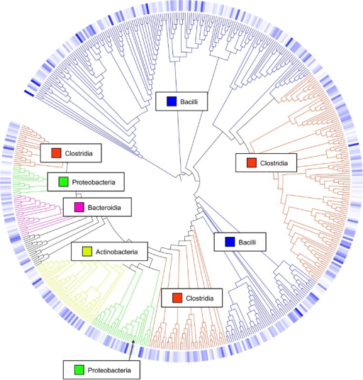

The investigation of environmental microbial communities and microbiomes has been revolutionized by the
development of high-throughput amplicon sequencing. In amplicon sequencing a particular genetic locus,
for example the 16S rRNA gene (or a part of it) in bacteria, is amplified from DNA extracted from the community of interest,
and then sequenced on a next-generation sequencing platform. This technique removes the need to culture
microbes in order to detect their presence, and cost-effectively provides a deep census of a microbial community.
The 16S rRNA gene has several properties that make it ideally suited for our purposes
Present in all prokaryotes
Highly conserved + highly variable regions
Huge reference databases
The highly conserved regions make it easy to target the gene across different organisms,
while the highly variable regions allow us to distinguish between different species.
The output of the dada2 pipeline is a feature table of amplicon sequence variants (an ASV table): A matrix with columns corresponding to samples and rows to ASVs, in which the value of each entry is the number of times that ASV was observed in that sample. This table is analogous to the traditional OTU table, except that one gets the actual sequences of the “true” sequence variants instead of rather anonymous and abstract entities called OTU1, OTU2, etc.
The process of amplicon sequencing introduces errors into the sequencing data, and these errors
severely complicate the interpretation of the results. DADA2 implements a novel algorithm that models the errors introduced during amplicon sequencing, and uses that error model to infer the true sample composition.
DADA2 replaces the traditional “OTU-picking” step in amplicon sequencing workflows, producing instead higher-resolution tables of amplicon sequence variants (ASVs).
Comment: Background: What are Operational Taxonomic Units (OTUs)?
In 16S metagenomics approaches, OTUs are clusters of similar sequence variants of the 16S rDNA marker gene
sequence. Each of these clusters is intended to represent a taxonomic unit of a bacteria species or genus
depending on the sequence similarity threshold. Typically, OTU cluster are defined by a 97% identity
threshold of the 16S gene sequence variants at species level. 98% or 99% identity is suggested for strain
separation.

(Image credit: Danzeisen et al. 2013, 10.7717/peerj.237)
As seen in the paper introducing DADA2 (Callahan et al. 2016) and in further benchmarking, the DADA2 method is more sensitive and specific than traditional OTU methods: DADA2 detects real biological variation missed by OTU methods while outputting fewer spurious sequences.
To illustrate the 16S amplicon data processing using DADA2, we will use dataset generated by the Schloss lab in their
their mothur MiSeq SOP: FASTQ files generated by 2x250 Illumina Miseq amplicon sequencing of the V4 region of the 16S rRNA gene from gut samples collected longitudinally from a mouse post-weaning. They describe the experiment as follows:
The Schloss lab is interested in understanding the effect of normal variation in the gut microbiome on host health. To that end,
we collected fresh feces from mice on a daily basis for 365 days post weaning. During the first 150 days post weaning (dpw),
nothing was done to our mice except allow them to eat, get fat, and be merry. We were curious whether the rapid change in
weight observed during the first 10 dpw affected the stability microbiome compared to the microbiome observed between days
140 and 150.
To speed up analysis for this tutorial, we will use only a subset of this data. We will look at a single mouse at 20 different time points (10 early, 10 late).
Any analysis should get its own Galaxy history. So let’s start by creating a new one:
Hands-on: Data upload
Create a new history for this analysis
To create a new history simply click the new-history icon at the top of the history panel:
Rename the history
Click on galaxy-pencil (Edit) next to the history name (which by default is “Unnamed history”)
Type the new name
Click on Save
To cancel renaming, click the galaxy-undo “Cancel” button
If you do not have the galaxy-pencil (Edit) next to the history name (which can be the case if you are using an older version of Galaxy) do the following:
Click on Unnamed history (or the current name of the history) (Click to rename history) at the top of your history panel
Type the new name
Press Enter
The starting point for the DADA2 pipeline is a set of demultiplexed FASTQ files corresponding to the samples in your amplicon sequencing study. That is, DADA2 expects there to be an individual FASTQ file for each sample (or two FASTQ files, one forward and one reverse, for each sample). Demultiplexing is often performed at the sequencing center, but if that has not been done there are a variety of tools do accomplish this.
In addition, DADA2 expects that there are no non-biological bases in the sequencing data. This may require pre-processing with outside software if, as is relatively common, your PCR primers were included in the sequenced amplicon region.
For this tutorial, we have 20 pairs of files. For example, the following pair of files:
F3D0_S188_L001_R1_001.fastq
F3D0_S188_L001_R2_001.fastq
The first part of the file name indicates the sample: F3D0 here signifies that this sample was obtained from Female 3 on Day 0.
The rest of the file name is identical, except for _R1 and _R2, this is used to indicate the forward and reverse reads respectively.
Hands-on: Import datasets
Import the following samples via link from Zenodo or Galaxy shared data libraries:
Click galaxy-uploadUpload Data at the top of the tool panel
Select galaxy-wf-editPaste/Fetch Data
Paste the link(s) into the text field
Press Start
Close the window
As an alternative to uploading the data from a URL or your computer, the files may also have been made available from a shared data library:
Go into Data (top panel) then Data libraries
Navigate to the correct folder as indicated by your instructor.
On most Galaxies tutorial data will be provided in a folder named GTN - Material –> Topic Name -> Tutorial Name.
Select the desired files
Click on Add to Historygalaxy-dropdown near the top and select as Datasets from the dropdown menu
In the pop-up window, choose
“Select history”: the history you want to import the data to (or create a new one)
Click on Import
40 files are a lot of files to manage. Luckily Galaxy can make life a bit easier by allowing us to create dataset collections. This enables us to easily run tools on multiple datasets at once.
Since we have paired-end data, each sample consist of two separate FASTQ files:
one containing the forward reads, and
one containing the reverse reads.
We can recognize the pairing from the file names, which will differ only by _R1 or _R2 in the filename. We can tell Galaxy about this paired naming convention, so that our tools will know which files belong together. We do this by building a List of Dataset Pairs
Hands-on: Organizing our data into a sorted paired collection
Create a paired collection named Raw Reads, rename your pairs with the sample name
Click on galaxy-selectorSelect Items at the top of the history panel
Check all the datasets in your history you would like to include
Click n of N selected and choose Build List of Dataset Pairs
Change the text of unpaired forward to a common selector for the forward reads
Change the text of unpaired reverse to a common selector for the reverse reads
Click Pair these datasets for each valid forward and reverse pair.
Enter a name for your collection
Click Create List to build your collection
Click on the checkmark icon at the top of your history again
Sort collection with the following parameters:
param-collection“Input Collection”: Raw Reads
Rename output collection to Sorted Raw Reads
Click on the collection
Click on the name of the collection at the top
Change the name
Press Enter
We can now start processing the reads using DADA2.
Hands-on: Choose Your Own Tutorial
This is a "Choose Your Own Tutorial" section, where you can select between multiple paths. Click one of the buttons below to select how you want to follow the tutorial
Do you want to go step-by-step or using a workflow?
Processing data using DADA2
Once demultiplexed FASTQ files without non-biological nucleotides are in hand, the DADA2 pipeline proceeds as follows:
Prepare reads
Inspect read quality profiles
Filter and trim
Learn the Error Rates
Infer sample composition
Merge forward/reverse reads
Construct sequence table
Make sequence table
Remove chimeras
Assign taxonomy
Evaluate accuracy
Hands-on: Importing and Launching a WorkflowHub.eu Workflow
WorkflowHub is a workflow management system which allows workflows to be FAIR (Findable, Accessible, Interoperable, and Reusable), citable, have managed metadata profiles, and be openly available for review and analytics.
Ensure that you are logged in to your Galaxy account.
Click on the Workflow menu, located in the top bar.
Click on the Import button, located in the right corner.
In the section “Import a Workflow from Configured GA4GH Tool Registry Servers (e.g. Dockstore)”, click on Search form.
In the TRS Server: workflowhub.eu menu you should type name:"dada2/main"
Click on the desired workflow, and finally select the latest available version.
After that, the imported workflows will appear in the main workflow menu. In order to run the workflow, just need to click in the workflow-runRun workflow icon.
Below is a short video showing this uncomplicated procedure:
Video: Importing from WorkflowHub
Hands-on: Define DADA2 workflow parameters
Select following parameters:
param-collection“Paired short read data”: Raw Reads
“Read length forward read”: 240
“Read length reverse read”: 160
“Pool samples”: process samples individually
“Cached reference database”: Silva version 132
Run the workflow
The workflow generates several outputs that we will inspect them given the step they correspond to.
Prepare reads
The first step is to check and improve the quality of data.
Inspect read quality profiles
We start by visualizing the quality profiles of the forward reads:
Hands-on: Inspect read quality profiles
dada2: plotQualityProfile ( Galaxy version 1.28+galaxy0) with the following parameters:
“Processing mode”: Joint
“Paired reads”: paired - in a data set pair
param-collection“Paired short read data”: Sorted Raw Reads
“Aggregate data”: No
“sample number”: 10000000
dada2: plotQualityProfile generates 2 files with quality profiles per sample: 1 PDF for forward reads and 1 PDF for reverse reads.
Hands-on: Inspect read quality profiles
Inspect plotQualityProfile forward read output
In gray-scale is a heatmap of the frequency of each quality score at each base position. The mean quality score at each position is shown by the green line, and the quartiles of the quality score distribution by the orange lines. The red line shows the scaled proportion of reads that extend to at least that position (this is more useful for other sequencing technologies, as Illumina reads are typically all the same length, hence the flat red line).
Question
Are the forward reads good quality?
We generally advise trimming the last few nucleotides to avoid less well-controlled errors that can arise there. What would you recommend as threshold?
Are the reverse reads good quality?
What would you recommend as threshold for trimming?
The forward reads are good quality
These quality profiles do not suggest that any additional trimming is needed. We will truncate the forward reads at position 240 (trimming the last 10 nucleotides).
The reverse reads are of significantly worse quality, especially at the end, which is common in Illumina sequencing. This isn’t too worrisome, as DADA2 incorporates quality information into its error model which makes the algorithm robust to lower quality sequence, but trimming as the average qualities crash will improve the algorithm’s sensitivity to rare sequence variants.
Based on the profiles, we will truncate the reverse reads at position 160 where the quality distribution crashes.
Comment: Considerations for your own data
Your reads must still overlap after truncation in order to merge them later! The tutorial is using 2x250 V4 (expected size, 270 bp–387 bp) sequence data, so the forward and reverse reads almost completely overlap and our trimming can be completely guided by the quality scores. If you are using a less-overlapping primer set, like V1-V2 or V3-V4, your truncated length must be large enough to maintain \(20 + biological.length.variation\) nucleotides of overlap between them.
Filter and trim
Let’s now trim and filter the reads:
Hands-on: Filter and trim
dada2: filterAndTrim ( Galaxy version 1.28+galaxy0) with the following parameters:
“Paired reads”: paired - in a data set pair
param-collection“Paired short read data”: Sorted Raw Reads
“Separate filters and trimmers for reverse reads”: Yes
In “Trimming parameters”:
“Truncate read length”: 160
In “Filtering parameters”:
“Remove reads by number expected errors”: 2
Comment: Speeding up downstream computation
The standard filtering parameters are starting points, not set in stone. If you want to speed up downstream computation, consider tightening the “Remove reads by number expected errors” value. If too few reads are passing the filter, consider relaxing the value, perhaps especially on the reverse reads (e.g. “Remove reads by number expected errors” to 2 for forward and 5 for reverse), and reducing the “Truncate read length” to remove low quality tails. Remember though, when choosing “Truncate read length” for paired-end reads you must maintain overlap after truncation in order to merge them later.
Comment: ITS data
For ITS sequencing, it is usually undesirable to truncate reads to a fixed length due to the large length variation at that locus. That is OK, just leave out “Truncate read length”. See the DADA2 ITS workflow for more information
dada2: filterAndTrim generates 2 outputs:
1 paired-collection named Paired reads with the trimmed and filtered reads
1 collection with statistics for each sample
Question
How many reads were in F3D0 sample before Filter and Trim?
How many reads are in F3D0 sample after Filter and Trim?
In F3D0 element in the collection, we see:
reads.in: 7793
reads.out: 7113
To better see the impact of filtering and trimming, we can inspect the read quality profiles and compare to the profiles before.
Hands-on: Inspect read quality profiles after Filter And Trim
dada2: plotQualityProfile ( Galaxy version 1.28+galaxy0) with the following parameters:
“Processing mode”: Joint
“Paired reads”: paired - in a data set pair
param-collection“Paired short read data”: Paired reads output of dada2: filterAndTrim
“Aggregate data”: No
“sample number”: 10000000
Question
Looking at outputs of plotQualityProfile for reverse reads before and after dada2: filterAndTrim
If you would like to view two or more datasets at once, you can use the Window Manager feature in Galaxy:
Click on the Window Manager icon galaxy-scratchbook on the top menu bar.
You should see a little checkmark on the icon now
Viewgalaxy-eye a dataset by clicking on the eye icon galaxy-eye to view the output
You should see the output in a window overlayed over Galaxy
You can resize this window by dragging the bottom-right corner
Click outside the file to exit the Window Manager
Viewgalaxy-eye a second dataset from your history
You should now see a second window with the new dataset
This makes it easier to compare the two outputs
Repeat this for as many files as you would like to compare
You can turn off the Window Managergalaxy-scratchbook by clicking on the icon again
Figure 1: Quality profiles for reverse reads before trimming and filteringOpen image in new tab
Figure 2: Quality profiles for reverse reads after trimming and filtering
How did trimming and filtering change the quality profiles for reverse reads?
The reads have been trimmed making the profiles looking better.
Learn the Error Rates
The DADA2 algorithm makes use of a parametric error model (err) and every amplicon dataset has a different set of error rates. The dada2: learnErrors method learns this error model from the data, by alternating estimation of the error rates and inference of sample composition until they converge on a jointly consistent solution. As in many machine-learning problems, the algorithm must begin with an initial guess, for which the maximum possible error rates in this data are used (the error rates if only the most abundant sequence is correct and all the rest are errors).
dada2: learnErrors tool expects as input one collection and not a paired collection. We then need to split to paired collection into 2 collections: one with forward reads and one with reverse reads.
Hands-on: Unzip paired collection
Unzip collection with the following parameters:
param-file“Paired input to unzip”: Paired reads output of dada2: filterAndTrim
Tag the (forward) collection with #forward
Click on the collection in your history to view it
Click on Editgalaxy-pencil next to the collection name at the top of the history panel
Click on Add Tagsgalaxy-tags
Add a tag named #forward
Tags starting with # will be automatically propagated to the outputs any tools using this dataset.
Click Savegalaxy-save
Check that the tag appears below the collection name
Tag the (reverse) collection with #reverse
Let’s now run dada2: learnErrors on both collections.
Hands-on: Learn the Error Rate
dada2: learnErrors ( Galaxy version 1.28+galaxy0) with the following parameters:
param-file“Short read data”: forward output of Unzip collection
dada2: learnErrors ( Galaxy version 1.28+galaxy0) with the following parameters:
param-file“Short read data”: reverse output of Unzip collection
Figure 3: Error rates for each possible transition for the forward reads
The error rates for each possible transition (A->C, A->G, …) are shown as a function of the associated quality score, the final estimated error rates (if they exist), the initial input rates, and the expected error rates under the nominal definition of quality scores. Points are the observed error rates for each consensus quality score. The black line shows the estimated error rates after convergence of the machine-learning algorithm. The red line shows the error rates expected under the nominal definition of the Q-score.
Question
Are the estimated error rates (black line) in a good fit to the observed rates (points) for the forward reads?
Figure 4: Error rates for each possible transition for the reverse reads
The estimated error rates (black line) are a good fit to the observed rates (points), and the error rates drop with increased quality as expected. Everything looks reasonable and we proceed with confidence.
Same
Infer Sample Composition
In this step, the core sample inference algorithm (Callahan et al. 2016) is applied to the filtered and trimmed sequence data.
Hands-on: Sample Inference
dada2: dada ( Galaxy version 1.28+galaxy0) with the following parameters:
“Process samples in batches”: no
Comment: Process samples in batches or not
Choosing yes for “Process samples in batches” gives identical results as no if samples are not pooled.
no: a single Galaxy job is started where the samples are processed sequentially
yes: a separate Galaxy job is started for each sample (given compute resources, this can be much faster)
If yes, the sorting of the collection is not needed.
param-file“Reads”: output of Unzip collection with #forward tag
“Pool samples”: process samples individually
Comment: Sample pooling
By default, the dada2: dada function processes each sample independently. However, pooling information across samples can increase sensitivity to sequence variants that may be present at very low frequencies in multiple samples. Two types of pooling are possible:
pool sample: standard pooled processing, in which all samples are pooled together for sample inference
pseudo pooling between individually processed samples: pseudo-pooling, in which samples are processed independently after sharing information between samples, approximating pooled sample inference in linear time.
param-file“Error rates”: output of dada2: learnErrors with #forward tag
dada2: dada ( Galaxy version 1.28+galaxy0) with the following parameters:
“Process samples in batches”: no
param-file“Reads”: output of Unzip collection with #reverse tag
“Pool samples”: process samples individually
param-file“Error rates”: output of dada2: learnErrors with #reverse tag
We can look at the number of true sequence variants from unique sequences have been inferred by DADA2.
Hands-on: Inspect number of true sequence variants from unique sequences
Click one output collection of dada2: dada
Click on detailsShow Details
Expand Tool Standard Output
Question
How many unique sequences are in forward reads for sample F3D0?
How many true sequence variants from unique sequences have been inferred by DADA2 for this dataset?
7113 reads in 1979 unique sequences
128 sequence variants were inferred from 1979 input unique sequences.
Merge paired reads
We now merge the forward and reverse reads together to obtain the full denoised sequences. Merging is performed by aligning the denoised forward reads with the reverse-complement of the corresponding denoised reverse reads, and then constructing the merged “contig” sequences. By default, merged sequences are only output if the forward and reverse reads overlap by at least 12 bases, and are identical to each other in the overlap region (but these conditions can be changed via tool parameters).
Hands-on: Merge paired reads
dada2: mergePairs ( Galaxy version 1.28+galaxy0) with the following parameters:
param-file“Dada results for forward reads”: output of dada2: dada with #forward tag
param-file“Forward reads”: output of Unzip collection with #forward tag
param-file“Dada results for reverse reads”: output of dada2: dada with #reverse tag
param-file“Reverse reads”: output of Unzip collection with #reverse tag
“Concatenated rather than merge”: No
Comment: Non-overlapping reads
Non-overlapping reads are supported, but not recommended. In this case, “Concatenated rather than merge” should be Yes.
“Output detailed table”: Yes
Let’s inspect the merged data, more specifically the table in details collection
Question
How many reads have been merged?
What are the different columns in the detail table for F3D0?
The detail table for F3D0 has 108 lines including a header. So 107 reads (over 128) have been merged
The table contains:
merged sequence,
its abundance,
the indices of the forward sequence variants that were merged
the indices of the reverse sequence variants that were merged
number of match in the alignment between forward and reverse
number of mismatch in the alignment between forward and reverse
number of indels in the alignment between forward and reverse
prefer
status to accept
Paired reads that did not exactly overlap were removed by mergePairs, further reducing spurious output.
Comment: Not enough reads merged
Most of the reads should successfully merge. If that is not the case upstream parameters may need to be revisited: Did you trim away the overlap between your reads?
Make sequence table
In this step, we construct an amplicon sequence variant table (ASV) table, a higher-resolution version of the OTU table produced by traditional methods.
Hands-on: Make sequence table
dada2: makeSequenceTable ( Galaxy version 1.28+galaxy0) with the following parameters:
param-collection“samples”: output of dada2: mergePairs
“Length filter method”: No filter
dada2: makeSequenceTable generates 2 outputs:
A sequence table: a matrix with rows corresponding to (and named by) the samples, and columns corresponding to (and named by) the sequence variants.
Question
How many ASVs have been identified?
The file contains 294 lines, including an header. So 293 ASVs have been identified.
An image with sequence length distribution
Question
What is the range of merged sequences?
Does the range make sense given the type of amplicon?
The lengths of merged sequences are between 251 and 255bp
The range falls within the expected range for this V4 amplicon.
Comment: Sequences too long or too short
Sequences that are much longer or shorter than expected may be the result of non-specific priming. Non-target-length sequences can be removed directly from the sequence table. This is analogous to “cutting a band” in-silico to get amplicons of the targeted length.
Remove chimeras
The core DADA method corrects substitution and indel errors, but chimeras remain. Fortunately, the accuracy of sequence variants after denoising makes identifying chimeric ASVs simpler than when dealing with fuzzy OTUs. Chimeric sequences are identified if they can be exactly reconstructed by combining a left-segment and a right-segment from two more abundant “parent” sequences.
Hands-on: Remove chimeras
dada2: removeBimeraDenovo ( Galaxy version 1.28+galaxy0) with the following parameters:
param-file“sequence table”: output of dada2: makeSequenceTable
Question
How many non chimeric reads have been found?
remaining nonchimeric: 96.40374 % (visible when expanding the dataset in history)
The frequency of chimeric sequences varies substantially from dataset to dataset, and depends on on factors including experimental procedures and sample complexity. Here chimeras make up about 21% of the merged sequence variants, but when we account for the abundances of those variants we see they account for only about 4% of the merged sequence reads.
Comment: Sequences too long or too short
Most of the reads should remain after chimera removal (it is not uncommon for a majority of sequence variants to be removed though). If most of the reads were removed as chimeric, upstream processing may need to be revisited. In almost all cases this is caused by primer sequences with ambiguous nucleotides that were not removed prior to beginning the DADA2 pipeline.
Track reads through the pipeline
As a final check of our progress, we’ll look at the number of reads that made it through each step in the pipeline.
Hands-on: Track reads through the pipeline
dada2: sequence counts ( Galaxy version 1.28+galaxy0) with the following parameters:
In “data sets”:
param-repeat“Insert data sets”
param-collection“Dataset(s)”: output of dada2: filterAndTrim
“name”: FiltTrim
param-repeat“Insert data sets”
param-collection“Dataset(s)”: output of dada2: dada with #forward tag
“name”: Dada Forward
param-repeat“Insert data sets”
param-collection“Dataset(s)”: output of dada2: dada with #reverse tag
“name”: Dada Reverse
param-repeat“Insert data sets”
param-collection“Dataset(s)”: output of dada2: mergePairs
“name”: MakePairs
param-repeat“Insert data sets”
param-file“Dataset(s)”: output of dada2: makeSequenceTable
“name”: SeqTab
param-repeat“Insert data sets”
param-file“Dataset(s)”: output of dada2: removeBimeraDenovo
“name”: Bimera
Question
Have we kept the majority of the raw reads for F3D143?
Is there any exceptionally large drop associated with any single step for any sample?
Yes
No
Comment: Sequences too long or too short
This is a great place to do a last sanity check. Outside of filtering, there should no step in which a majority of reads are lost. If a majority of reads failed to merge, you may need to revisit the truncLen parameter used in the filtering step and make sure that the truncated reads span your amplicon. If a majority of reads were removed as chimeric, you may need to revisit the removal of primers, as the ambiguous nucleotides in unremoved primers interfere with chimera identification.
Assign taxonomy
It is common at this point, especially in 16S/18S/ITS amplicon sequencing, to assign taxonomy to the sequence variants. The DADA2 package provides a native implementation of the naive Bayesian classifier method (Wang et al. 2007) for this purpose. The dada2: assignTaxonomy function takes as input a set of sequences to be classified and a training set of reference sequences with known taxonomy, and outputs taxonomic assignments with at least minBoot bootstrap confidence.
dada2: assignTaxonomy and addSpecies generates a table with rows being the ASVs and columns the taxonomic levels. Let’s inspect the taxonomic assignments.
Question
Which kingdom have been identified?
Which phyla have been identified? And how many ASVs per phylum?
How many ASVs have species assignments?
Only bacteria
Comment: Wrong kingdom
If your reads do not seem to be appropriately assigned, for example lots of your bacterial 16S sequences are being assigned as Eukaryota, your reads may be in the opposite orientation as the reference database. Tell DADA2 to try the reverse-complement orientation (“Try reverse complement”) with dada2: assignTaxonomy and addSpecies and see if this fixes the assignments.
To get the identified phyla and the number of associated ASVs, we run Group data by a column with the following parameters:
param-file“Select data”: output of dada2: assignTaxonomy and addSpecies
“Group by column”:Column 3
param-repeatInsert Operation
“Type”: Count
“On column”: Column 3
Phyla
Number of ASVs
Actinobacteria
6
Bacteroidetes
20
Cyanobacteria
3
Deinococcus-Thermus
1
Epsilonbacteraeota
1
Firmicutes
185
Patescibacteria
2
Phylum
1
Proteobacteria
7
Tenericutes
6
Verrucomicrobia
1
Unsurprisingly, the Bacteroidetes and Firmicutes are well represented among the most abundant taxa in these fecal samples.
16/232 species assignments were made, both because it is often not possible to make unambiguous species assignments from subsegments of the 16S gene, and because there is surprisingly little coverage of the indigenous mouse gut microbiota in reference databases.
Exploration of ASVs with phyloseq
phyloseq (McMurdie and Holmes 2013) is a powerful framework for further analysis of microbiome data. It imports, stores, analyzes, and graphically displays complex phylogenetic sequencing data that has already been clustered into Operational Taxonomic Units (OTUs) or ASV, especially when there is associated sample data, phylogenetic tree, and/or taxonomic assignment of the OTUs/ASVs.
Prepare metadata table and launch phyloseq
To use phyloseq properly, the best is to provide it a metadata table. Here, we will also uses the small amount of metadata we have: the samples are named by the gender (G), mouse subject number (X) and the day post-weaning (Y) it was sampled (eg. GXDY).
We will construct a simple sample table from the information encoded in the filenames. Usually this step would instead involve reading the sample data in from a file. Here we will:
Extract element identifiers of a collection
Add information about gender, mouse subject number and the day post-weaning using the extracted element identifiers
Remove last line
Add extra column When to indicate if Early (days < 100) or Late (day > 100)
Add a header
Hands-on: Prepare metadata table
Extract element identifiers ( Galaxy version 0.0.2) with the following parameters:
param-collection“Dataset collection”: output of dada2: mergePairs
We will now extract from the names the factors:
Replace Text in entire line ( Galaxy version 1.1.2)
param-file“File to process”: output of Extract element identifierstool
In “Replacement”:
In “1: Replacement”
“Find pattern”: (.)(.)D(.*)
“Replace with”: \1\2D\3\t\1\t\2\t\3
The given pattern ..D. will be applied to the identifiers, where . will match any single character and .* any number of any character. The additional parentheses will record the matched character such that it can be used in the replacement (e.g. \1 will refer to the content that matched the pattern in the 1st pair of parentheses)
This step creates 3 additional columns with the gender, the mouse subject number and the day post-weaning
Change the datatype to tabular
Click on the galaxy-pencilpencil icon for the dataset to edit its attributes
In the central panel, click galaxy-chart-select-dataDatatypes tab on the top
In the galaxy-chart-select-dataAssign Datatype, select tabular from “New type” dropdown
Tip: you can start typing the datatype into the field to filter the dropdown menu
Click the Save button
Select first lines from a dataset (head) ( Galaxy version 9.3+galaxy1) to remove the last line
param-file“File to select”: output of Replace Text
“Operation”: Remove last lines
“Number of lines”: 1
Compute ( Galaxy version 2.0) on rows with the following parameters:
param-file“Input file”: output of Select first lines
“Input has a header line with column names?”: No
In “Expressions”:
“Add expression”: bool(c4>100)
“Mode of the operation?”: Append
Replace Text in a specific column ( Galaxy version 9.3+galaxy1) on rows with the following parameters:
param-file“File to process”: output of Compute
In “Replacement”:
In “1: Replacement”
“in column”: Column: 5
“Find pattern”: True
“Replace with”: Late
param-repeat“Insert Replacement”
In “2: Replacement”
“in column”: Column: 5
“Find pattern”: False
“Replace with”: Early
param-repeat“Insert Replacement”
In “3: Replacement”
“in column”: Column: 2
“Find pattern”: F
“Replace with”: Female
param-repeat“Insert Replacement”
In “4: Replacement”
“in column”: Column: 2
“Find pattern”: M
“Replace with”: Male
Create a new file (header) from the following (header line of the metadata table)
Sample Gender Mouse Day When
Click galaxy-uploadUpload Data at the top of the tool panel
Select galaxy-wf-editPaste/Fetch Data at the bottom
Paste the file contents into the text field
Change the dataset name from “New File” to header
Change Type from “Auto-detect” to tabular* Press Start and Close the window
Concatenate datasets to add this header line to the Replace Text output:
param-file“Concatenate Dataset”: the header dataset
“Dataset”
param-repeat“Insert Dataset”
param-file“select”: output of Replace Text
Rename the output to Metadata table
We have now a metadata table with five columns:
Sample
Gender
Mouse subject
Day post-weaning
When
We now construct a phyloseq object directly with it and the DADA2 outputs and launch Shiny-phyloseq (McMurdie and Holmes 2015) to explore the phyloseq object.
Hands-on: Create phyloseq object and launch phyloseq exploration
Create phyloseq object from dada2 ( Galaxy version 1.46.0+galaxy0) with the following parameters:
param-file“Sequence table”: output of dada2: removeBimeraDenovo
param-file“Taxonomy table”: output of dada2: assignTaxonomy and addSpecies
param-file“Sample table”: Metadata table
Phyloseq with the following parameters:
param-file“Phyloseq R object”: output of Create phyloseq object from dada2
Go to User > Active InteractiveTools
Wait for the to be running (Job Info)
Click on
A new page will be launched with Shiny-phyloseq ready to explore the phyloseq object.
Visualize alpha-diversity
A diversity index is a quantitative measure that is used to assess the level of diversity or variety within a particular system, such as a biological community, a population, or a workplace. It provides a way to capture and quantify the distribution of different types or categories within a system.
Related to ecology, the term diversity describes the number of different species present in one particular area and their relative abundance. More specifically, several different metrics of diversity can be calculated. The most common ones are α, β and γ diversity.
The α diversity describes the diversity within a community. It considers the number of different species in an environment (also referred to as species richness). Additionally, it can take the abundance of each species into account to measure how evenly individuals are distributed across the sample (also referred to as species evenness).
There are several different indices used to calculate α diversity because different indexes capture different aspects of diversity and have varying sensitivities to different factors. These indexes have been developed to address specific research questions, account for different ecological or population characteristics, or highlight certain aspects of diversity.
Here we will plot the α diversity for the samples given the Days using 2 measures:
The Shannons index, which calculates the uncertainty in predicting the species identity of an individual that is selected from a community (Shannon 1948).
The Simpsons index, which calculates the probability that two individuals selected from a community will be of the same species. Obtains small values in datasets of high diversity and large values in datasets of low diversity (SIMPSON 1949).
Hands-on: Plot α diversity
Click on Alpha Diversity tab
Select the following parameters:
“X”: Day
“Color”: When
“alpha Measures”: Shannon, Simpson
Question
Is there any obvious systematic difference in alpha-diversity between early and late samples?
No
Plot Ordination
Ordination refers to a set of multivariate techniques used to analyze complex ecological data. It involves summarizing large datasets, such as species abundance across different samples, by projecting them onto a low-dimensional space. This visualization makes it easier to identify patterns and relationships within the data, such as how species distributions correspond to environmental gradients. Ordination helps understand the underlying factors that structure ecological communities and the relative importance of different environmental variables.
Phyloseq offers several ordination methods:
MDS (Multidimensional Scaling): MDS is a technique that visualizes the level of similarity or dissimilarity of individual cases of a dataset by positioning them in a low-dimensional space.
PCoA (Principal Coordinates Analysis): PCoA is a distance-based ordination method that transforms a distance matrix into a set of coordinates, allowing the visualization of the relationships between samples in a reduced dimensional space.
DCA (Detrended Correspondence Analysis): DCA is an ordination method that removes the arch effect in Correspondence Analysis, providing a more accurate representation of ecological gradients.
CCA (Canonical Correspondence Analysis): CCA is a direct gradient analysis technique that relates species composition data to measured environmental variables, highlighting the influence of these variables on community structure.
RDA (Redundancy Analysis): RDA is a linear ordination method that combines features of regression and PCA, allowing the analysis of relationships between multiple response variables (e.g., species data) and explanatory variables (e.g., environmental data).
DPCoA (Double Principle Coordinate Analysis): DPCoA is a multivariate technique that combines distance-based methods with correspondence analysis to account for phylogenetic or functional diversity among species.
NMDS (Non-metric Multidimensional Scaling): NMDS is an ordination technique that aims to represent the pairwise dissimilarities between samples in a low-dimensional space, emphasizing the rank order of dissimilarities rather than their exact values.
Here we will plot NMDS.
Hands-on: Plot NMDS Ordination plot
Click on Ordination tab
Select the following parameters:
“Display”: Samples
“Method”: NMDS
“Transform”: Prop
“Color”: When
Question
Is there a clear separation between the early and late samples?
Yes
Plot abundance stacked barplot
Abundance barplots are graphical tools that display the relative abundance of different species or groups in a dataset, allowing for easy comparison and visualization of community composition and distribution patterns across samples.
Let’s plot an abundance stacked barplot at the family level.
Hands-on: Plot abundance stacked barplot
Click on Bar tab
Select the following parameters:
“X-axis”: Samples
“Color”: Family
“Facet Col”: When
Click on (Re)Build Graphic
The barplot is hard to read here: many families are in white because the color palette is reduced and we can not distinguish them. We need to filter to data to display only the most abundant families. We will select only taxa with more than 500 counts.
Hands-on: Filter and Plot abundance stacked barplot
Click on Filter tab
Select the following parameters:
” Taxa Min.”: 500
Click on Execute Filter
Click on Bar tab
Select the following parameters:
“X-axis”: Samples
“Color”: Family
“Facet Col”: When
Click on (Re)Build Graphic
Question
Is there an obvious change in taxonomy between the early and late samples?
Not really
Comment: Using ampvis2 for heatmap instead of a barplot
Constructing an Amplicon Sequence Variant (ASV) table from 16S data using DADA2 provides a robust and accurate method for analyzing microbial communities. This tutorial has guided you through the key steps, including quality filtering, dereplication, error rate learning, sample inference, and chimera removal, culminating in the generation of a high-resolution ASV table and visualization using Phyloseq. By following these steps, you can ensure that your microbial diversity analyses are based on precise and reproducible sequence variants, allowing for more reliable ecological and evolutionary insights.
You've Finished the Tutorial
Please also consider filling out the Feedback Form as well!
Key points
DADA2 allows for the generation of precise ASV tables, providing higher resolution and more accurate representation of microbial communities compared to traditional OTU-based methods.
Key steps such as quality filtering, error rate learning, and chimera removal are essential in the DADA2 pipeline to ensure the reliability and accuracy of the resulting ASV data.
Tools like phyloseq can be effectively used to explore and visualize ASV tables, facilitating deeper ecological and evolutionary insights into microbial diversity and community structure.
Further information, including links to documentation and original publications, regarding the tools, analysis techniques and the interpretation of results described in this tutorial can be found here.
References
Shannon, C. E., 1948 A Mathematical Theory of Communication. Bell System Technical Journal 27: 379–423. 10.1002/j.1538-7305.1948.tb01338.x
SIMPSON, E. H., 1949 Measurement of Diversity. Nature 163: 688. 10.1038/163688a0
Wang, Q., G. M. Garrity, J. M. Tiedje, and J. R. Cole, 2007 Nai\‘ Ive Bayesian Classifier for Rapid Assignment of rRNA Sequences into the New Bacterial Taxonomy. Applied and Environmental Microbiology 73: 5261–5267. 10.1128/aem.00062-07
Schloss, P. D., S. L. Westcott, T. Ryabin, J. R. Hall, M. Hartmann et al., 2009 Introducing mothur: Open-Source, Platform-Independent, Community-Supported Software for Describing and Comparing Microbial Communities. Applied and Environmental Microbiology 75: 7537–7541. 10.1128/aem.01541-09
McMurdie, P. J., and S. Holmes, 2013 phyloseq: An R Package for Reproducible Interactive Analysis and Graphics of Microbiome Census Data (M. Watson, Ed.). PLoS ONE 8: e61217. 10.1371/journal.pone.0061217
McMurdie, P. J., and S. Holmes, 2015 Shiny-phyloseq: Web application for interactive microbiome analysis with provenance tracking. Bioinformatics 31: 282–283. 10.1093/bioinformatics/btu616
Callahan, B. J., P. J. McMurdie, M. J. Rosen, A. W. Han, A. J. A. Johnson et al., 2016 DADA2: High-resolution sample inference from Illumina amplicon data. Nature Methods 13: 581–583. 10.1038/nmeth.3869
Andersen, K. S., R. H. Kirkegaard, S. M. Karst, and M. Albertsen, 2018 ampvis2: an R package to analyse and visualise 16S rRNA amplicon data. 10.1101/299537
Edgar, R. C., 2018 Updating the 97% identity threshold for 16S ribosomal RNA OTUs. Bioinformatics 34: 2371–2375. 10.1093/bioinformatics/bty113
Bolyen, E., J. R. Rideout, M. R. Dillon, N. A. Bokulich, C. C. Abnet et al., 2019 Reproducible, interactive, scalable and extensible microbiome data science using QIIME 2. Nature Biotechnology 37: 852–857. 10.1038/s41587-019-0209-9
Özkurt, E., J. Fritscher, N. Soranzo, D. Y. K. Ng, R. P. Davey et al., 2022 LotuS2: an ultrafast and highly accurate tool for amplicon sequencing analysis. Microbiome 10: 10.1186/s40168-022-01365-1
Feedback
Did you use this material as an instructor? Feel free to give us feedback on how it went.
Did you use this material as a learner or student? Click the form below to leave feedback.
Hiltemann, Saskia, Rasche, Helena et al., 2023 Galaxy Training: A Powerful Framework for Teaching! PLOS Computational Biology 10.1371/journal.pcbi.1010752
Batut et al., 2018 Community-Driven Data Analysis Training for Biology Cell Systems 10.1016/j.cels.2018.05.012
@misc{microbiome-dada-16S,
author = "Bérénice Batut",
title = "Building an amplicon sequence variant (ASV) table from 16S data using DADA2 (Galaxy Training Materials)",
year = "",
month = "",
day = ""
url = "\url{https://training.galaxyproject.org/training-material/topics/microbiome/tutorials/dada-16S/tutorial.html}",
note = "[Online; accessed TODAY]"
}
@article{Hiltemann_2023,
doi = {10.1371/journal.pcbi.1010752},
url = {https://doi.org/10.1371%2Fjournal.pcbi.1010752},
year = 2023,
month = {jan},
publisher = {Public Library of Science ({PLoS})},
volume = {19},
number = {1},
pages = {e1010752},
author = {Saskia Hiltemann and Helena Rasche and Simon Gladman and Hans-Rudolf Hotz and Delphine Larivi{\`{e}}re and Daniel Blankenberg and Pratik D. Jagtap and Thomas Wollmann and Anthony Bretaudeau and Nadia Gou{\'{e}} and Timothy J. Griffin and Coline Royaux and Yvan Le Bras and Subina Mehta and Anna Syme and Frederik Coppens and Bert Droesbeke and Nicola Soranzo and Wendi Bacon and Fotis Psomopoulos and Crist{\'{o}}bal Gallardo-Alba and John Davis and Melanie Christine Föll and Matthias Fahrner and Maria A. Doyle and Beatriz Serrano-Solano and Anne Claire Fouilloux and Peter van Heusden and Wolfgang Maier and Dave Clements and Florian Heyl and Björn Grüning and B{\'{e}}r{\'{e}}nice Batut and},
editor = {Francis Ouellette},
title = {Galaxy Training: A powerful framework for teaching!},
journal = {PLoS Comput Biol} Computational Biology}
}
Funding
These individuals or organisations provided funding support for the development of this resource
Congratulations on successfully completing this tutorial!
You can use Ephemeris's shed-tools install command to install the tools used in this tutorial.
Questions:


{kind=link}
Open image in new tab
Open image in new tab
 Question
Question
{kind=link}
{kind=link}
{kind=link}